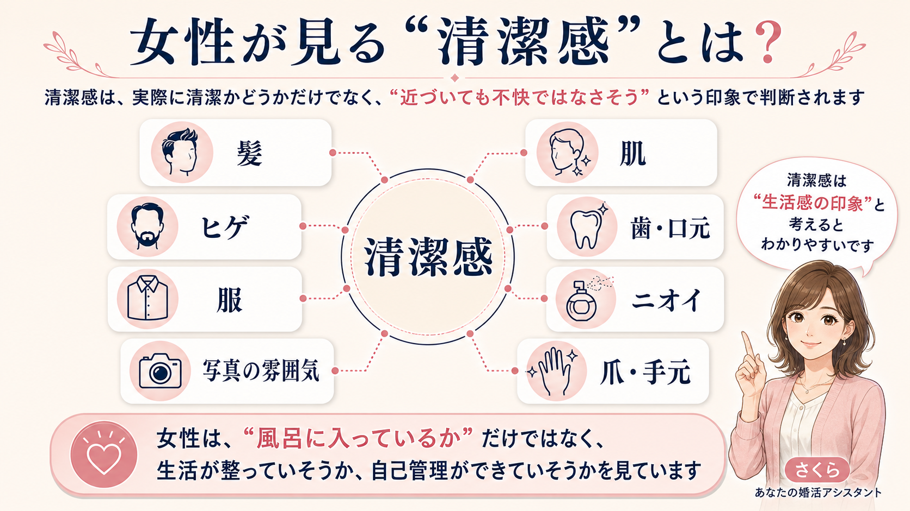
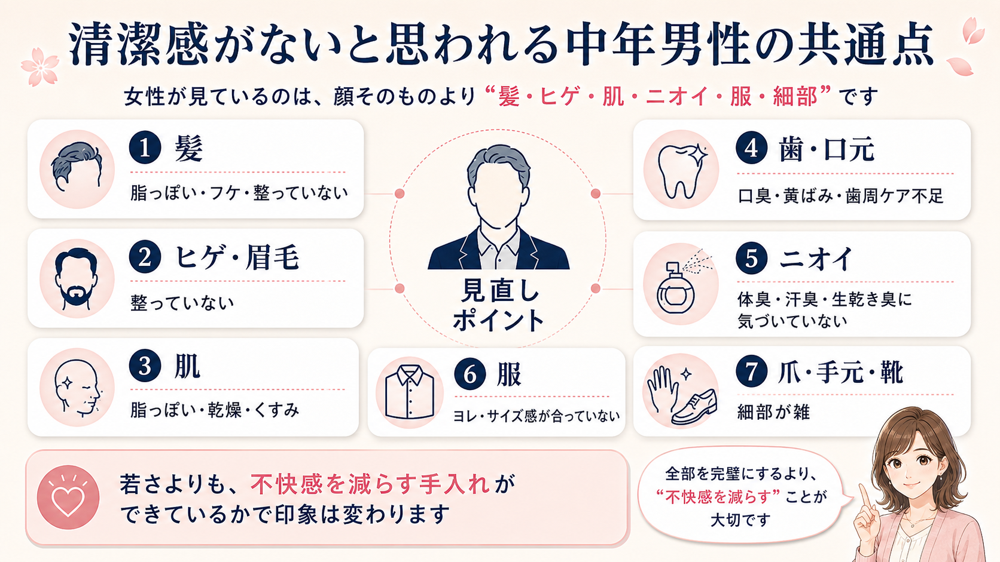
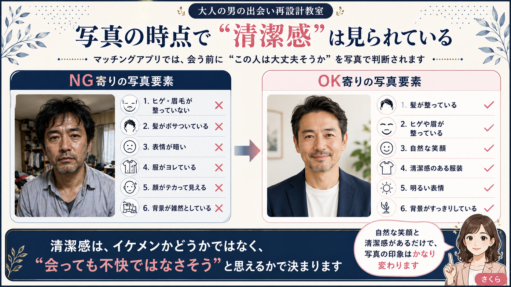
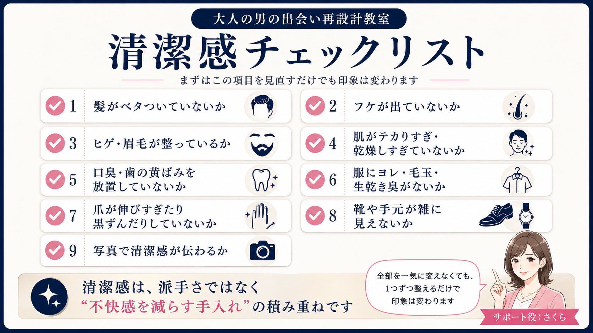
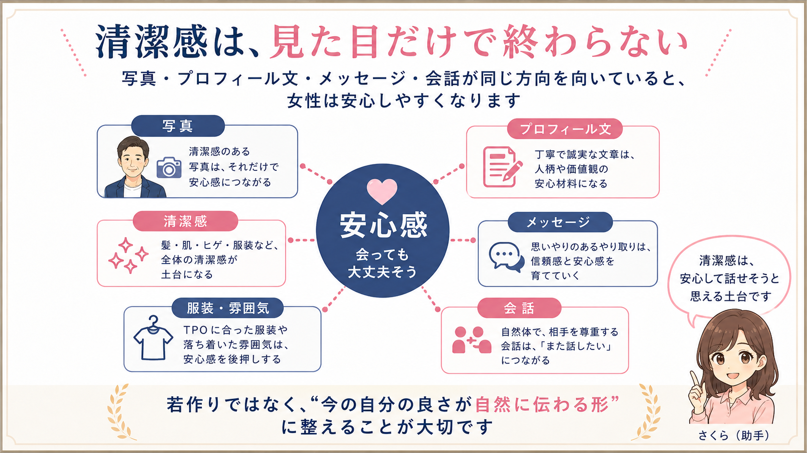

清潔感・若見え
清潔感がないと思われる中年男性の共通点
女性が見ているのは、顔立ちそのものだけではありません。髪・肌・ヒゲ・歯・ニオイ・服・爪・写真の雰囲気から伝わる「生活感」と「近づいても不快ではなさそうか」が、出会いの入口で大きく影響します。


清潔感は、恋愛対象に入るための最低条件
先生、マッチングアプリで反応が悪いんです。
いいねも来ないし、マッチしても会う前にやり取りが止まることが多くて……。やっぱり年齢とか顔の問題なんでしょうか。
年齢や見た目の影響がまったくないとは言いません。
でも、女性が最初に見ているのは、顔立ちそのものだけではありません。実はかなり強く見られているのが、清潔感です。
先生
清潔感ですか……。
でも、毎日風呂には入っていますし、服も普通に洗っています。それでも足りないんですか？
 さくら
さくら
ここでいう清潔感は、単にお風呂に入っているかどうかだけではありません。
髪、肌、ヒゲ、歯、ニオイ、服、爪、写真の雰囲気から、「近づいても不快ではなさそうか」「生活が雑そうに見えないか」「会っても大丈夫そうか」を見ています。
清潔感は、恋愛では加点要素というより、入口の条件です。
結婚相手に求める条件に関する調査でも、清潔感は重視されやすい項目です。不潔と感じる要素としても、汗臭さ、フケ、口臭などが強く挙げられています。
先生
 さくら
さくら
女性が見ているのは、おしゃれかどうかだけではありません。
高い服か、流行の髪型か、若く見えるかより前に、「この人と近い距離で話しても大丈夫そうか」を見ています。
清潔感は、イケメンになるためのものではありません。
女性に安心してもらうための、入口の整備です。ここを整えるだけでも、写真やプロフィールの見え方は変わります。
先生
そもそも女性が言う「清潔感」とは何か

先生、清潔感ってよく言われますけど、正直よくわからないんです。
毎日風呂に入って、歯も磨いていれば清潔なんじゃないですか？
もちろん、それは大前提です。ただ、恋愛で言われる清潔感は、実際に清潔かどうかだけではありません。
相手から見て、近づいても不快ではなさそうか。生活が雑そうに見えないか。自己管理ができていそうか。そこまで含めた“印象”です。
先生
さくら
女性側は、髪・肌・ヒゲ・歯・ニオイ・服・爪・写真の雰囲気から、かなり細かく判断しています。
「ちゃんと洗っているか」だけではなく、「会ったときに安心できそうか」を見ているんです。
だから大事なのは、若作りではありません。相手に不快感を与えない見せ方に整えることです。
先生
清潔感がないと思われる中年男性の共通点

清潔感がないと思われる男性には、いくつかの共通点があります。
ここで大事なのは、「汚い人を責める」という話ではありません。むしろ多くの男性は、普通に生活しています。毎日風呂にも入っています。仕事もしています。本人としては、そこまでだらしなくしているつもりはありません。
それでも女性から見ると、髪・肌・ヒゲ・歯・ニオイ・服・爪などに、年齢や生活感が出てしまうことがあります。特に40代・50代になると、若い頃と同じ感覚のままでは、知らないうちに損をしやすくなります。
髪が脂っぽい・フケがある・整っていない
清潔感で最初に見られやすいのが、髪です。髪は顔のすぐ近くにあり、写真でも対面でも目に入りやすい部分です。
髪が脂っぽい、フケがある、寝ぐせが残っている、毛先がパサついている、髪型が何年も更新されていない。こうした状態は、女性から見ると「生活が雑そう」「自分の見え方に無頓着そう」という印象につながりやすくなります。
流行の髪型にする必要はありません。大切なのは、若者っぽい髪型ではなく、今の年齢に合った、整って見える髪型です。
ヒゲ・眉毛が整っていない
中年男性の無精ひげは、本人が思うほど“ワイルド”には見えません。むしろ、疲れている、雑、生活が荒れている、という印象になりやすいです。
ヒゲ自体が悪いわけではありません。問題は、整っていないことです。伸ばすなら輪郭を整える。伸ばさないなら剃り残しを減らす。鼻下、あご、首元の中途半端な毛を放置しない。
眉毛も同じです。眉がボサボサだと、表情が重く見えます。顔まわりが整っているかどうかで、「この人は自分の見え方に気を配っているか」が伝わります。
肌が脂っぽい・乾燥している・くすんでいる
40代・50代男性にとって、肌の印象も無視できません。ここで言う肌ケアは、美容男子になるという話ではありません。
肌が脂っぽくテカっている、乾燥して粉っぽい、くすんで疲れて見える、ひげ剃り後が荒れている。こうした状態は、写真でも対面でも「疲れている」「生活が乱れていそう」という印象につながります。
最低限、洗顔する、保湿する、日焼け止めを使う、ひげ剃り後の肌荒れを放置しない。このくらいでも印象は変わります。
口臭・歯の黄ばみ・歯周病を放置している
口元は、清潔感に直結します。特に口臭は、本人が気づきにくい一方で、相手には強く伝わります。
会話の距離になったとき、口臭があると、それだけで女性は距離を取りたくなります。どれだけ優しい言葉をかけても、口臭が気になると、会話そのものが苦痛になります。
中年以降は、歯周病や歯ぐきの状態も関係します。だからこそ、40代・50代男性ほど、歯科検診、歯石取り、歯間ブラシ、舌ケア、口臭チェックを現実的に考えた方がいいです。
体臭・汗臭・生乾き臭に気づいていない
ニオイも、本人が気づきにくい要素です。汗臭い、服から生乾き臭がする、枕や部屋の生活臭が服に移っている、香水や柔軟剤が強すぎる。これらは、女性にとってかなり強いマイナスになります。
特に中年以降は、若い頃と同じケアでは足りないことがあります。年齢によって体臭の質が変わることがあるからです。
中年男性に必要なのは、香水で上書きすることではありません。汗をかいた服を放置しない。生乾き臭を防ぐ。枕カバーやタオルをこまめに洗う。香りは弱く、清潔に感じる程度にする。これが現実的です。
服がヨレている・サイズが合っていない・古びている
清潔感は、服にも出ます。ただし、高い服を着ればいいという話ではありません。
問題になるのは、ヨレ、毛玉、首元の伸び、色あせ、サイズ違い、強いシワです。40代・50代男性の場合、服のヨレやサイズ違いは、若い男性以上に“生活感”として出ます。
大人の男性に必要なのは、派手な服ではありません。サイズが合っている。清潔に見える。くたびれていない。写真で見たときに落ち着いて見える。これだけで十分です。
爪・手元・靴など細部が雑
最後に見落とされやすいのが、細部です。爪が伸びている、爪の間が黒ずんでいる、靴が汚れている、財布やスマホケースがボロボロ。こういう細部は、本人が思う以上に見られます。
特に爪や手元は、食事や会話の場面で自然に目に入ります。女性が顔だけを見ていると思ったら、かなり危険です。
爪を短く整える。靴の汚れを落とす。ボロボロの小物を見直す。こうした細かい部分は派手ではありませんが、清潔感の土台になります。
マッチングアプリでは“清潔感のなさ”が写真の時点で切られやすい

マッチングアプリでは、会う前に写真で判断されます。これは残酷ですが、現実です。
女性はプロフィール写真を見ながら、「この人と会っても大丈夫そうか」「近づいても不快ではなさそうか」「生活が整っていそうか」「雑な人ではなさそうか」を一瞬で判断しています。
写真だけですべてが決まるわけではありません。でも、写真の時点で清潔感がないと、プロフィール文まで読まれないことがあります。
40代・50代男性は、若さや顔立ちで不利に見られることを気にしがちです。しかし実際にはその前に、髪が整っているか、ヒゲや眉が雑に見えないか、服がヨレていないか、表情が怖くないか、背景が汚くないかで足切りされている可能性があります。
マッチングアプリの写真で大切なのは、イケメンに見せることではありません。まず、「この人なら会っても大丈夫そう」と思ってもらうことです。
写真の清潔感について詳しく見直したい方は、40代男性がマッチングアプリでNGになりやすいプロフィール写真の記事も参考にしてください。
なぜ中年男性は「自分では普通なのに」清潔感で損しやすいのか
先生、正直、自分ではそんなに汚くしているつもりはないんです。
毎日風呂にも入っていますし、服も普通に洗っています。
そこは大事です。ただ、問題は「汚いかどうか」だけではありません。相手からどう見えているかです。
年齢を重ねると、髪、肌、体臭、口元、服の古さなどが表に出やすくなります。だから若い頃と同じ手入れでは、清潔感として伝わりにくくなるんです。
先生
さくら
自分のニオイや生活感って、自分では気づきにくいんです。
でも、女性は近い距離で会うことを想像するので、写真や文章から「会っても大丈夫そうか」を見ています。
必要なのは、若作りではありません。今の年齢に合った手入れに更新することです。
先生
清潔感を整えるときに、まず見直すべきチェックポイント

清潔感は、全部を一気に変えようとすると大変です。まずは、次の項目を順番に見直してください。
- 髪がベタついていないか、フケが出ていないか
- ヒゲ・眉毛が整っているか
- 肌がテカりすぎ・乾燥しすぎていないか
- 口臭・歯の黄ばみ・歯周ケアを放置していないか
- 服にヨレ・毛玉・生乾き臭がないか
- 爪が伸びすぎたり黒ずんだりしていないか
- 靴や手元が雑に見えないか
- 写真で清潔感が伝わるか
清潔感は、派手さではなく“不快感を減らす手入れ”の積み重ねです。全部を一気に変えなくても、1つずつ整えるだけで印象は変わります。
若作りではなく、「会っても大丈夫そう」に整えることが大切
清潔感を整えることは、若作りをすることではありません。
40代・50代男性が、無理に20代・30代のように見せようとすると、逆に違和感が出ます。若く見せることばかりを意識する、派手な服を着る、香水を強くする、加工写真で別人のように見せる。こうした方向は、女性に安心感を与えるとは限りません。
大人の男性に必要なのは、若さの演出ではなく、不快感を減らす整え方です。
髪が整っている。ヒゲや眉が雑に見えない。肌が疲れて見えすぎない。口元に不安がない。服がくたびれていない。ニオイ対策ができている。写真で会っても大丈夫そうに見える。
これができているだけで、女性から見た印象は変わります。清潔感とは、若く見えることではありません。安心して近づけそうに見えることです。
写真・清潔感・プロフィール全体をつなげて整えると、印象は変わる

先生、清潔感を整えれば、それだけで反応は良くなりますか？
改善する可能性はあります。ただし、清潔感だけで全部が決まるわけではありません。
写真で清潔感が伝わっても、プロフィール文が雑だと不安になります。プロフィール文が誠実でも、メッセージで急に距離を詰めると警戒されます。
先生
さくら
女性は、ひとつの項目だけで判断しているわけではありません。
写真、清潔感、文章、メッセージ、会話の雰囲気がつながっていると、安心しやすいです。
だから大切なのは、全体の一貫性です。若作りをするのではなく、今の自分の良さが女性に伝わる形に整える。それが、大人の男性の出会いには必要です。
先生
清潔感が整っていても、プロフィール文が雑だったり、距離感が急すぎたりすると、女性は途中で不安を感じることがあります。写真の印象と文章の印象をそろえる考え方は、女性が安心する大人の男のプロフィール文とはの記事でも詳しく解説しています。
Profile Redesign

プロフィール全体を見直したい方へ
清潔感を整えることは、とても大切です。ただ、実際には、写真ではどう見えているか、プロフィール文に雑さが出ていないか、メッセージで距離を詰めすぎていないか、会話の印象まで一貫しているかを合わせて見ないと、本当の原因はわかりにくいものです。
大人の男の出会い再設計教室では、若作りではなく、写真・清潔感・プロフィール文・メッセージ・会話を整えて、女性に伝わる見せ方へ再設計することを大切にしています。
プロフィール再設計相談を見るまとめ｜清潔感は、若さではなく「安心して近づけそうか」で決まる
清潔感がないと思われる中年男性の共通点は、顔立ちの問題だけではありません。
髪が整っていない。ヒゲや眉が雑に見える。肌が疲れて見える。口臭や歯の印象に不安がある。体臭や服の臭いに気づいていない。服がヨレている。爪や靴など細部が雑。写真で生活感が悪く出ている。
こうした小さな要素が積み重なることで、女性は「会っても大丈夫そうか」を判断しています。
清潔感は、若作りではありません。イケメンになることでもありません。高級な服を着ることでもありません。
大切なのは、不快感を与えないための手入れができているか。生活が整っていそうに見えるか。自己管理ができていそうに見えるか。
40代・50代男性の出会いでは、年齢を変えることはできません。でも、見せ方は変えられます。
髪を整える。ヒゲや眉を整える。肌と口元を整える。服とニオイを見直す。写真で清潔感が伝わるようにする。
それだけで、女性から見た「会っても大丈夫そう」という安心感は変わります。
清潔感は大切ですが、いいねが来ない原因は清潔感だけとは限りません。写真、プロフィール文、メッセージ、年齢の見せ方など、全体の原因を整理したい方は、50代男性がマッチングアプリでいいねをもらえない理由の記事も参考にしてください。
大人の男に必要なのは、若く見せることではありません。今の自分を、清潔に、誠実に、安心して見える形へ整えることです。
次に読みたい関連記事
清潔感だけでなく、写真・プロフィール文・全体の見せ方も合わせて整えると、女性に伝わる印象はさらに安定します。